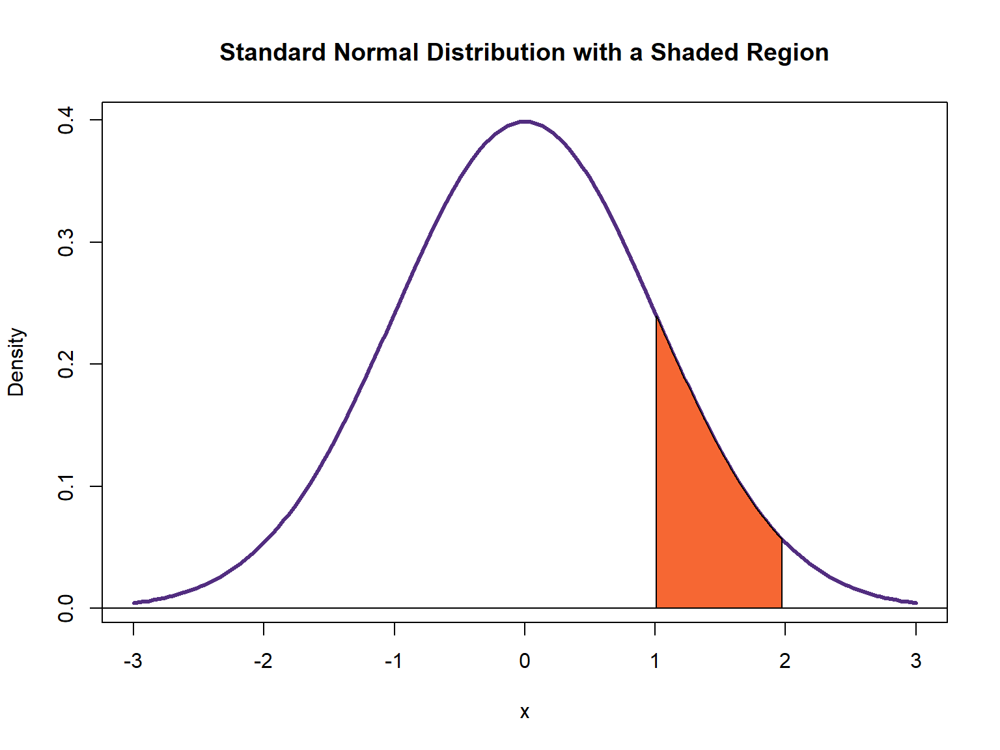

5 Distributions - Normal distribution
We have mentioned the normal distribution several times in this textbook with the promise we would provide more detail later. In this section, we will explore the normal distribution, why it matters, and how we can tell if our distribution is normal or not.
5.1 Characteristics of Normal Distribution
Historical background
There are several important probability distributions in statistics. However, the normal distribution might be the most important. A normal distribution is the familiar “bell curve” and it’s a way of formalizing a distribution where observations cluster around some central tendency. Observations farther from the central tendency occur less frequently. First, Galileo informally described a normal distribution in 1632 when discussing the random errors from observations of celestial phenomena. However, Galileo existed before the time of differential equations and derivatives. We owe its formalization to Carl Friedrich Gauss, which is why the normal distribution is often called a Gaussian distribution. A very familiar example is the height for adult people that approximates a normal distribution very well.
The mathimatical type
Gauss’ normal distribution, technically a density function, is a distribution defined by two parameters, mean \(\mu\) and variance \(\sigma^2\). The mean , \(\mu\), is a “location parameter”, which defines the central tendency. The variance, \(\sigma^2\) is the “scale parameter”, which defines the width of the distribution and how short the distribution is. It’s formally given as follows:
\[ f(x)={\frac {1}{\sigma {\sqrt {2\pi }}}}e^{-{\frac {1}{2}}\left({\frac {x-\mu }{\sigma }}\right)^{2}} \tag{5.1}\]
The ensuing distribution will look like this in a simple case where \(\mu\) is 0 and \(\sigma^2\) is 1.

Individual components of a normal distribution
We can break down individual components of a normal distribution and explain them until they seem more accessible.
First, the “kernel” is the part inside the exponent of the above equation (i.e. \(\ {-{\frac {1}{2}}\left({\frac {x-\mu }{\sigma }}\right)^{2}}\)). Observe, for a simple case where \(\mu\) = 0 and \(\sigma^2\) = 1 that this part becomes \(\ -{\frac {1}{2}}x^{2}\) that is a negative parabola (notice the square term). The minus sign just flips the basic parabola \(\ {\frac {1}{2}}x^{2}\) downward.

Second, exponentiating the negative parabola (\(\ e^{-{\frac {1}{2}}x^{2}}\)) makes it asymptote to 0.

Notice the tails in the above graph are asymptote to 0. “Asymptote” is a fancier way of saying the tails approximate 0 but never touch or surpass 0. One way of thinking about this as we build toward its inferential implications is that deviations farther from the central tendency are increasingly “unlikely”.
Third, and with the above point in mind, it should be clear that \(\ {\frac {1}{\sigma {\sqrt {2\pi }}}}\) will scale the height of the distribution. Observe that in our simple case where \(\mu\) is 0 and \(\sigma^2\) is 1, the height of the exponentiated parabola is at 1. That gets multiplied by \(\ {\frac {1}{\sqrt {2\pi }}}\) to equal about 0.398.
Fourth, the normal distribution is perfectly symmetrical. The mean, \(\mu\) determines the location of the distribution as well as its central tendency. All three measures of central tendency, the mode (most frequently occurring value), the median (the middlemost value), and the mean (the statistical average), will be the same. It also means a given observation of x will be as far from \(\mu\) as -x. Additionally, the statistical moments of skewness and excess kurtosis are zero.
Fifth, we noted the normal distribution as a function and not a probability because the probability of any one value is effectively zero.
Normal Density Plot with Shaded Regions
Importantly, around 68% of the distribution is between one standard unit of \(\mu\). Around 90% of the distribution is between 1.645 standard units on either side of \(\mu\). Around 95% of the distribution is between about 1.96 standard units on either side of \(\mu\). About 99% of the distribution is between 2.58 standard units on either side of \(\mu\). So, the probability that x is between 1 on either side of the \(\mu\) of 0 is effectively 0.68. The ease of this interpretation is why researchers like to standardize their variables so that the mean is 0 and the standard deviation (i.e. the scale parameter) is 1.

The normal distribution appears as a foundation assumption for a lot of quantitative approaches to frequentist statistics.
In summary, the normal density function is technically unbounded. It has just the two parameters that define its location and scale and the tails are asymptote to 0 no matter what the values of \(\mu\) and \(\sigma^2\) are. This makes the distribution continuous since x can range over the entire line from \(\ -\infty\) to \(\ +\infty\). Thus, the function does not reveal the probability of x (the probability of any one value is effectively 0). However, the area under the curve is the full domain of the probability space and sums to 1. The probability of selecting a number between two points on the x-axis equals the area under the curve between those two points.

To find the area between x = 1 and x = 2, we must integrate the Equation 5.1 as following:
\[ E(x)=\int_{1}^{2}f(x)dx \tag{5.2}\]
5.2 Properties of an approximately normal distribution
In an approximately bell-shaped (normal) distribution:
the mean, the median and the mode have very close values
the histogram is symmetric about the mean
“nearly all” values (99.7%) are within -3 and +3 standard deviations of the mean
the measure of skewness takes values close to zero (symmetric distribution) (Figure 5.7 b). Particularly, values between −1 and +1 indicate an approximate bell-shaped curve.
the measure of excess kurtosis is close to 0 (mesokurtic) (Figure 5.8 b). A kurtosis value between −1 and +1 indicates normality.
Statistical moments and normality
There are two ways in which samples can deviate from normality: skew and kurtosis.
Skewness
Skewness is usually described as a measure of a dataset's symmetry – or lack of symmetry.
Skewness values that are negative indicate a tail to the left (Figure 5.7 a), zero value indicate a symmetric distribution (Figure 5.7 b), while values that are positive indicate a tail to the right (Figure 5.7 c).
Skewness values between −1 and +1 indicate an approximate bell-shaped curve. Values from −1 to −3 or from +1 to +3 indicate that the distribution is tending away from a bell shape with >1 indicating moderate skewness and >2 indicating severe skewness. Any values above +3 or below−3 are a good indication that the variable is not normally distributed.

Kurtosis
The other way that distributions can deviate from normality is kurtosis. The kurtosis parameter is a measure of the combined weight of the tails relative to the rest of the distribution. Kurtosis is associated indirect with the peak of the distribution (if the peak of the distribution is too high or too low).
Distributions with positive excess kurtosis are called leptokurtic (Figure 5.8 a). If the measure of excess kurtosis is close to 0 the distribution is mesokurtic (Figure 5.8 b). Finally, distributions with negative excess kurtosis are called platykurtic (Figure 5.8 c).
A kurtosis value between −1 and +1 indicates normality and a value between −1 and −3 or between +1 and +3 indicates a tendency away from normality. Values below −3 or above +3 strongly indicate non-normality.